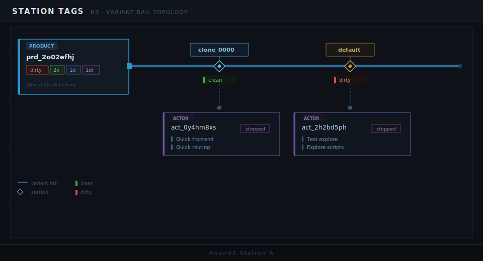
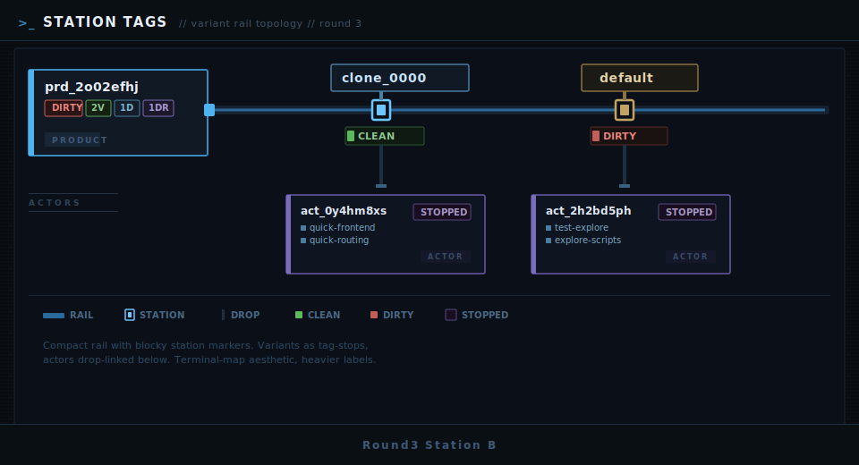
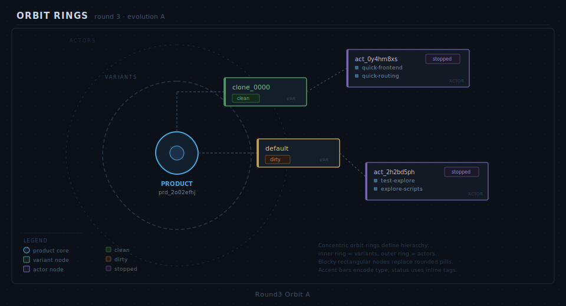
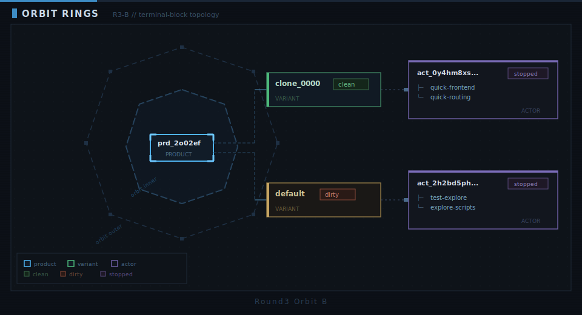

Dark Factory // Graph Node // Round 3
Simple blocky gallery. Round 2 nays cleared. Keeping only Station Tags + Orbit Rings track.
+--------------------------------------------------------------+
| BASELINE KEPT (ROUND 2): |
| [YAY] Station Tags -> graph-node-round2-station-tags.svg |
| [YAY] Orbit Rings -> graph-node-round2-orbit-rings.svg |
| |
| ROUND 3 CANDIDATES: |
| station-a, station-b, orbit-a, orbit-b |
| |
| VOTE FORMAT: |
| station-a yay/nay, station-b yay/nay, orbit-a yay/nay, ... |
+--------------------------------------------------------------+
Station A
Evolution of Station Tags (clean/blocky)

Vote: station-a yay/nay
Station B
Heavier terminal chrome, compact rails

Vote: station-b yay/nay
Orbit A
Minimal ring map, rectangular nodes

Vote: orbit-a yay/nay
Orbit B
Octagon ring style, stronger ASCII vibe

Vote: orbit-b yay/nay
Embedded notes (from markdown):
Round 2 winners:
- Station Tags
- Orbit Rings
Design brief for this round:
- Keep map feel
- Simpler HTML + blocky/ascii style
- Less decorative overhead
Reference markdown: graph-node-round3-notes.md